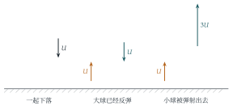

STEP II 2010，第 10 题
继续之前，请先阅读题目（原题为英文）。题目载于 STEP Support Programme 的题目资料库： step.maths.org/questions/10-s2-q10
引子
把一个网球放在篮球上面，然后让两个球一起落下。篮球从地面反弹，网球随即向上飞射，升到原来下落高度的好几倍，有时甚至高得撞上天花板。这个实验请到户外去做。
题目的第 (i) 部分说明，单独一次碰撞有一个速率上限：无论撞过来的球有多重，一个静止的球被撞之后，速率都不可能超过来球速率的两倍。第 (ii) 部分则说明怎样打破这个上限：让运动沿着一串愈来愈轻的球传递下去，每传一步，速率都会再乘上一个倍数。把太空探测器送往外行星，靠的正是同一个想法；也有人提出，超新星（supernova）爆发的机制当中有一部分也是如此。
动笔之前
根据 第 10.1 节：若质量为 \(M\)、以速率 \(u\) 运动的物体与质量为 \(m\) 的静止物体发生弹性碰撞（elastic collision），碰撞后 \(m\) 的速率是多少？
那一节的结果（把两个质量的角色对调）给出被撞粒子的速率为 \(\frac{2M}{M + m}u\)。还有另一个记法：在弹性碰撞中，相对速度（relative velocity）会反向。如果重球几乎没有减慢，轻球离开时的速率就必定比重球的速率大约多出 \(u\)，也就是大约 \(2u\)。
逐步解题
阶段 1 速率上限
取 \(M = bm\)，碰撞后 \(A\) 的速率为 \[v_A = \frac{2bm}{bm + m}\,u = \frac{2b}{b + 1}\,u.\]
\(\frac{2b}{b+1}\) 与 \(2\) 相比，哪个较大？当 \(b \to \infty\) 时会怎样？
由于对任何 \(b\) 都有 \(\frac{2b}{b + 1} = 2 - \frac{2}{b + 1} < 2\)，所以 \(A\) 的速率总是小于 \(2u\)，无论 \(B\) 有多重。当 \(b \to \infty\) 时，这个速率趋近 \(2u\)：一个无限重的球会把 \(A\) 弹开，就像 \(A\) 撞上一堵移动中的墙一样。■
阶段 2 沿着一串粒子传递
在第 (ii) 部分，每个粒子的质量都是下一个粒子的 \(\lambda\) 倍。对于这串粒子中的每一次碰撞，第 (i) 部分告诉了我们甚么？
\(B_1\)（质量 \(\lambda^n m\)）撞上 \(B_2\)（质量 \(\lambda^{n-1}m\)），后者的质量是前者的 \(\lambda\) 分之一。在第 (i) 部分取 \(b = \lambda\)，可知 \(B_2\) 以速率 \(\frac{2\lambda}{\lambda + 1}u\) 离开。接着 \(B_2\) 撞上 \(B_3\)，后者的质量同样是前者的 \(\lambda\) 分之一，于是 \(B_3\) 以速率 \(\bigl(\frac{2\lambda}{\lambda + 1}\bigr)^2u\) 离开。经过 \(n\) 次这样的碰撞之后（最后一次是 \(B_n\) 撞上 \(A\)）， \[v_A = \Bigl(\frac{2\lambda}{\lambda + 1}\Bigr)^nu.\] （各个 \(B\) 之间其后再发生的碰撞，只会把 \(A\) 推得更快，不会使它减慢，因为从来没有东西从前方撞向 \(A\)。）
\(\frac{2\lambda}{\lambda + 1}\) 比 \(1\) 大还是比它小？
由于 \(\lambda > 1\)，故 \(2\lambda > \lambda + 1\)，因此比值 \(r = \frac{2\lambda}{\lambda + 1}\) 大于 \(1\)，而且当 \(n \to \infty\) 时 \(r^n \to \infty\)。所以只要 \(n\) 取得够大，\(A\) 的速率要多快就有多快。■
阶段 3 快二十倍
取 \(\lambda = 4\)，则 \(r = \frac85 = 1.6\)，我们需要 \(1.6^n > 20\)。取以 \(10\) 为底的对数（logarithm）， \[\log_{10}1.6 = \log_{10}16 - 1 = 4\log_{10}2 - 1 \approx 0.20412, \qquad \log_{10}20 = 1 + \log_{10}2 \approx 1.30103,\] 所以我们需要 \(n > \frac{1.30103}{0.20412} \approx 6.37\)。最小的值是 \(n = 7\)。（事实上 \(1.6^6 \approx 16.8\)，而 \(1.6^7 \approx 26.8\)。）■
回顾
把单一结果反复套用。第 (i) 部分的结果在第 (ii) 部分用了 \(n\) 次，把有界的增益变成无界的增益。
永远达不到的极限。速率可以趋近上界 \(2u\)，却永远达不到，所以正确的写法是严格不等式（strict inequality）。
对数把乘方化为乘积。“需要多少步”这个问题，变成了一道除法。
背后的数学
篮球与网球
设两个球从高度 \(H\) 一起落下，到达地面时的速率为 \(U = \sqrt{2gH}\)。假设一切碰撞都是完全弹性的，而且篮球比网球重得多。篮球从地面反弹，以速率 \(U\) 向上运动，随即遇上仍以速率 \(U\) 向下运动的网球。在篮球的参考系（frame）中，网球以 \(2U\) 的速率迎面而来，撞上一个非常重的物体后反弹，再以 \(2U\) 的速率离开。回到地面参考系，那就是以 \(2U + U = 3U\) 的速率向上运动（图 10.2.1）。由于上升高度与抛射速率的平方成正比，网球会升到 \(9H\) 的高度。
现实中的球并不是完全弹性的。若恢复系数（coefficient of restitution）为 \(e\)，质量比为 \(M/m\)，网球离开时的速率就是 \(\frac{Me(2 + e) - m}{M + m}U\)。练习中的 STEP I 2014 Q10，就是由量度所得的高度反推质量比。

引力弹弓
太空探测器飞掠行星时并没有碰到行星，但引力的作用就像与一个非常重的物体发生一次非常柔和的弹性碰撞。在行星的参考系中，探测器绕过行星，离开时的速率与到达时相同。如果行星正以速率 \(V\) 朝探测器运动，那么在太阳的参考系中，探测器的速率最多可以增加 \(2V\)，与网球的情况完全一样。1977 年发射的两艘航行者号（Voyager）探测器，利用了外行星一次罕见的排列，从木星飞往土星（航行者2号（Voyager 2）更继续飞往天王星和海王星），每次与行星相遇都获得加速。假如没有这些引力助推（gravity assist），前往海王星的旅程就要花上大约三十年，而不是十二年。能量来自行星，而行星因此减慢的幅度小得无法量度。
1968 年，W. R. Mellen 在 American Journal of Physics 上描述了一种“弹力球反弹抛射体”（superball rebound projectile）：把几个由大至小的球叠起来，最顶的球可以用撞击速率的许多倍弹射出去。天体物理学家指出，这与核心塌缩超新星（core-collapse supernova）有一点粗略的相似之处：恒星向内坠落的外层物质撞上坚硬而致密的核心后反弹，冲击波（shock wave）把动量（momentum）向外带进密度愈来愈低的物质，把这些物质加速到极高的速率。叠球效应的示范常用来向学生解释这个想法，不过真实的超新星所涉及的物理比弹跳的球多得多，中微子（neutrino）就是其中之一。
思维技巧
如果一个过程只是把一个简单步骤重复多次，就先把这一步解决一次，然后把它复合起来。
每一步的增益因子都小于 \(2\)，但经过很多步之后，增益却变成无界，因为这些因子是相乘的。到了大学，这就是转移矩阵（transfer matrix）、多级放大器和多级火箭（第 10.3 节）背后的想法：一条链的增益，等于链上各个环节的增益的乘积。
延伸练习
真实的情况。试做 STEP I 2014，第 10 题：这是带有真实数据、反弹并不完美的叠球问题。
非弹性的链。试做 STEP I 2017，第 10 题。这一题让碰撞沿着一串质量按几何级数增长的粒子传递下去。在甚么情况下，每个粒子都恰好参与两次碰撞？
三个球。把三个完全弹性的球叠起来，每个球都比它下面的球轻得多。证明最顶的球以 \(7U\) 的速率离开，并升到 \(49H\) 的高度。若有 \(k\) 个球，证明最顶的球以 \((2^k - 1)U\) 的速率离开。
能量从何而来？在第 (ii) 部分，证明即使 \(A\) 的速率无界，总动能（kinetic energy）仍然守恒。那些重的粒子会怎样？
延伸阅读
David Morin, Introduction to Classical Mechanics（Cambridge University Press），第 5 章，当中包括叠球问题。
W. R. Mellen,“Superball rebound projectiles”, American Journal of Physics 36 (1968)。篇幅短小，读来有趣。
Gary Flandro,“Fast reconnaissance missions to the outer solar system utilizing energy derived from the gravitational field of Jupiter”, Astronautica Acta 12 (1966)。这篇论文提出了航行者号的“行星大巡游”（grand tour）。